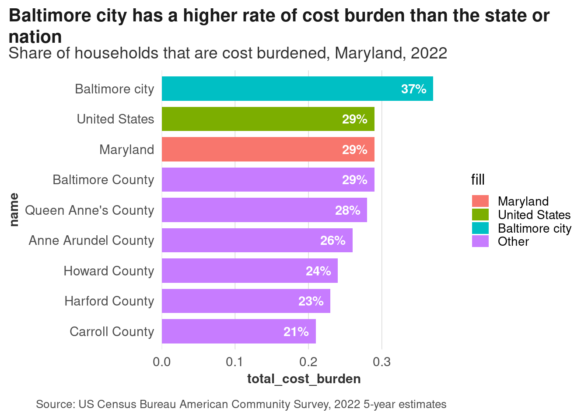
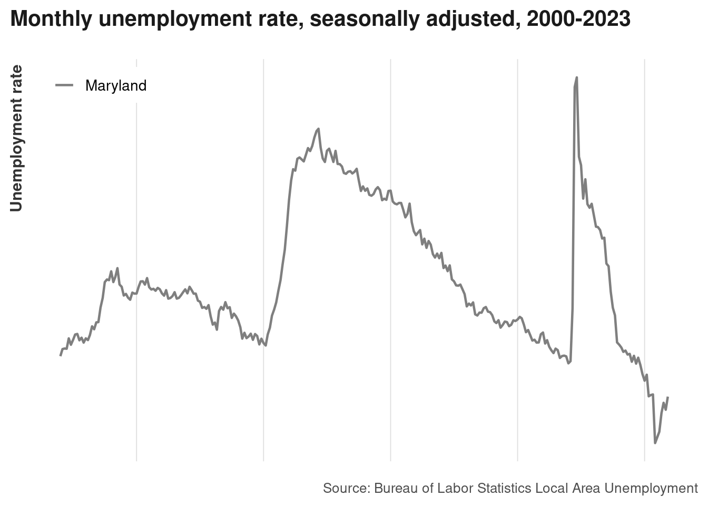

7. Text and annotations
Big picture: providing context and making meaning
“Until the systems of power recognise different categories, the data I’m reporting on is also flawed,” she added.
In a bid to account for these biases, and any biases of her own, Chalabi is transparent about her sources and often includes disclaimers about her own decision-making process and about any gaps or uncertainties in the data.
“I try to produce journalism where I’m explaining my methods to you,” she said. “If I can do this, you can do this, too. And it’s a very democratising experience, it’s very egalitarian.”
In an ideal scenario, she is able to integrate this background information into the illustrations themselves, as evidenced by her graphics on anti-Asian hate crimes and the ethnic cleansing of Uygurs in China.
But at other times, context is relegated to the caption to ensure the graphic is as grabby as possible.
“What I have found is literally every single word that you add to an image reduces engagement, reduces people’s willingness or ability to absorb the information,” Chalabi said.
“So there is a tension there. How can you be accurate and get it right without alienating people by putting up too much information? That’s a really, really hard balance.”
Mona Chalabi in Hahn (2023)
Text
A data visualization is not a piece of art meant to be looked at only for its aesthetically pleasing features. Instead, its purpose is to convey information and make a point. To reliably achieve this goal when preparing visualizations, we have to place the data into context and provide accompanying titles, captions, and other annotations. – Wilke (2019) ch. 22
The type of text you use, phrasing, and placement all depend on where your visualizations will go, who will read them, and how they might be distributed. For example, I might put less detail in the titles and labels of a chart that will be part of a larger publication than a chart that might get distributed on its own (I’ll also tend towards more straightforward chart types and simpler analyses for something standalone).
Uses of text
Here’s a good rundown on how to use text
Identify all the text in this chart, what purpose it serves, and whether that could be done better through other means.
acs |>
filter(level %in% c("us", "state") | name %in% balt_metro) |>
mutate(name = forcats::fct_reorder(name, total_cost_burden)) |>
mutate(level2 = forcats::fct_other(name, keep = c("United States", "Maryland", "Baltimore city"))) |>
stylehaven::offset_lbls(value = total_cost_burden, frac = 0.025, fun = scales::label_percent()) |>
ggplot(aes(x = name, y = total_cost_burden, fill = level2)) +
geom_col(width = 0.8) +
geom_text(aes(label = lbl, hjust = just, y = y), color = "white", fontface = "bold") +
scale_y_barcontinuous() +
coord_flip() +
labs(title = "Baltimore city has a higher rate of cost burden than the state or nation",
subtitle = "Share of households that are cost burdened, Maryland, 2022",
caption = "Source: US Census Bureau American Community Survey, 2022 5-year estimates",
fill = "fill") +
theme(panel.grid.major.y = element_blank(),
panel.grid.major.x = element_line()) 
| Text | Purpose | Could be better? |
|---|---|---|
| Title | Takeaway, what you’re looking at in context | |
| Subtitle | Specifics of what’s being measured | Depending on context, maybe put cost burden definition here |
| Independent axis | Locations | |
| Independent axis title | What’s on the axis | Not necessary; we know what these names are |
| Legend title | What colors mean | |
| Legend labels | Location types | Drop the legend, put any additional info in subtitle |
| Dependent axis title | Meaning of variable being measured | Can remove since it’s in the subtitle, but some styleguides may say keep it |
| Caption | Source | Could put definition of cost burden here |
| Dependent axis labels | Specify meaning of breaks along axis | Can drop because redundant |
| Direct data labels on bars | Values of each data point |
Other annotations
There are other annotations that are useful too. You might mark off a region to show a cluster of points, or a period in time. There are 2 approaches to this with ggplot: using geoms (geom_text, geom_hline, etc) or annotation layers (annotate, annotation_custom). The main difference is that annotations aren’t mapped to data the way geoms are. Because of that, I almost only use geoms for annotations, and usually make a small data frame just for the data that goes into the annotations to avoid hard-coding too much.
An example from DataHaven’s most recent books: we wanted to explicitly put evictions into a policy context, so we marked off the end of the federal eviction moratorium and the prepandemic average count as a threshhold. Without those labeled lines, you could tell that there was an abrupt drop in evictions, then a steep rise in them about a year and a half later, then counts that are higher than at the beginning of 2020. But unless you had followed eviction trends and COVID relief policies, you might not know why any of those things occurred.
Exercises
This chart doesn’t have labels for its axes, but you know it’s unemployment rates in Baltimore and Maryland. How accurately can we guess what the labels would be?

Next, what annotations would be helpful for contextualizing this trend?
- Timespan–years on axis
- Source
- Units of measurement
- Historical events